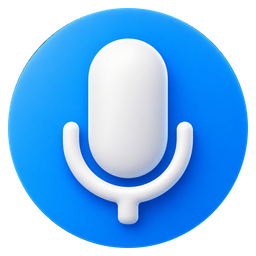

Один процесс
Экран, системный звук, микрофон, текст и история собраны в одном рабочем сценарии.
Middle системный аналитик

Записывает экран, системный звук и микрофон, локально расшифровывает встречу и помогает превратить разговор в понятные итоги и задачи.
Актуальная версия — 1.0.15 · исходный код открыт · Windows 10/11
Экран, системный звук, микрофон, текст и история собраны в одном рабочем сценарии.
Whisper-модели работают на компьютере; запись не нужно отправлять во внешний сервис.
Сохранённую расшифровку можно превратить в краткие итоги, решения, риски и список задач.
Запись встречи в MP4 вместе с микрофоном и системным аудио.
Модели на устройстве и явный выбор Auto, NVIDIA GPU или CPU.
Поиск, воспроизведение, переименование, удаление и повторная обработка.
Необязательная обработка через OpenAI, OpenRouter или Codex CLI.
Выбрать микрофон и при необходимости добавить экран с системным звуком.
Обработать запись локальной моделью faster-whisper на CPU или NVIDIA.
Получить встречу с датой, медиа, исходным текстом и историей изменений.
Подготовить краткий или полный итог с решениями, рисками и ответственными.
Слева — основные разделы, в центре — библиотека встреч, справа — запись, воспроизведение, расшифровка и результат. Светлая и тёмная темы помогают встроить приложение в повседневную работу.
Записи, настройки и локальная база хранятся в
%LOCALAPPDATA%\Svodika и сохраняются при обычном обновлении.
Python, PyQt6, faster-whisper, FFmpeg, SQLite и отдельный слой интеграций для необязательной облачной обработки текста.